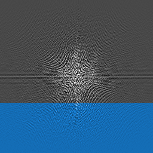

Halfscan
To reduce scan time, a part of one side of K-space is not acquired. Instead the data is copied from the other side of K-space. This is possible because of the phase-conjugate symmetry. Every point in K-space can be copied 'mirrored' across the center point as follows:
For each complex number [a+bi] found at (x,y) its mirrored complex number at (size-x,size-y) equals [a-bi]. They have equal amplitudes(a) and opposite phase(bi).

The blue part is derived from the opposite side of K-space. Unfortunately any noise in that area is copied too. The result is that applying halfscan decreases the signal-to-noise ratio.
In practice MRI systems do not allow very high halfscan factors. The symmetry in K-space helps to balance out motion. By scanning just over half of K-space, scans become very sensitive to motion artifacts and other nasty stuff.
It is difficult to see in this app, but halfscan is applied in real-time. The increased amount of noise can be seen at very low noise levels. The best way to demonstrate halfscan is to add some spikes and see how halfscan copies these spikes from the other side.
Halfscan is also known as partial Fourier or fractional NEX